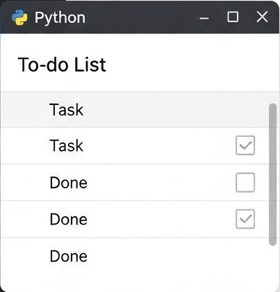
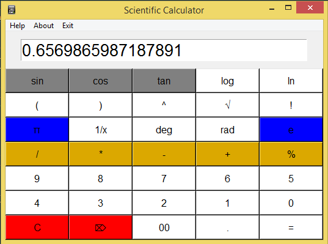
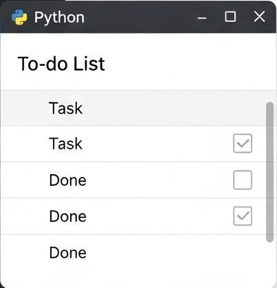
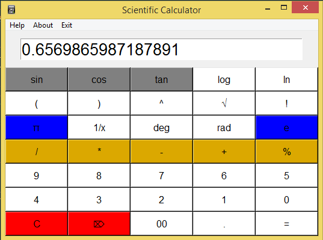
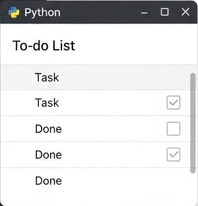
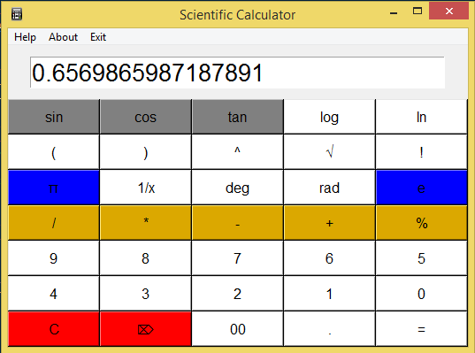

Mini projects are perfect for leveling up your Python skills — quick, practical, and fun! Let’s explore some project ideas and code snippets you can start hacking on today.
🔥 Why Mini Projects?
Build confidence by finishing small, doable goals.
Practice key Python concepts like loops, functions, and file I/O.
Create real things you can show off or use.
Experiment and learn faster than just reading docs.
🎯 Project Idea 1: Number Guessing Game
Guess a random number between 1 and 20. You get feedback whether your guess is too high, low, or correct.
Output simulation will appear here...
🎯 Project Idea 2: Simple To-Do List
Keep track of tasks in a list. Add, view, and remove tasks.
Output simulation will appear here...
🎯 Project Idea 3: Basic Calculator
Create a calculator that adds, subtracts, multiplies, or divides two numbers.
Output simulation will appear here...
💡 Pro Tip: Start small, then add features like saving data to files, input validation, or GUI interfaces!
📷 Mini Projects Screenshots


🌐 Open Source Python Mini Projects
Check out these cool repos to see mini projects in action or contribute yourself:
 


